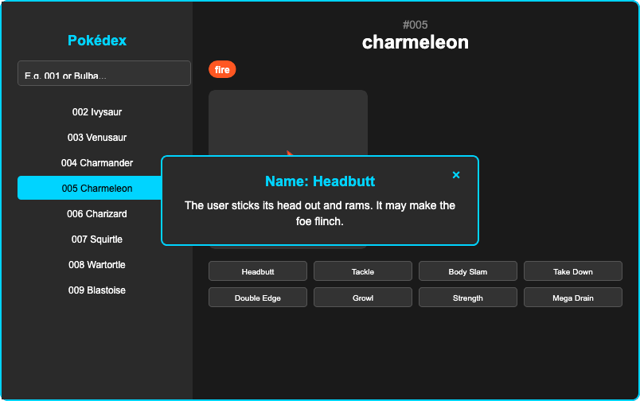
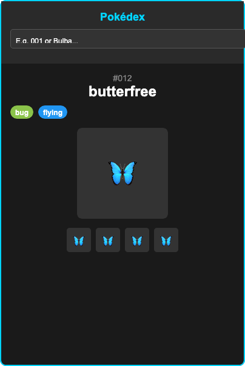
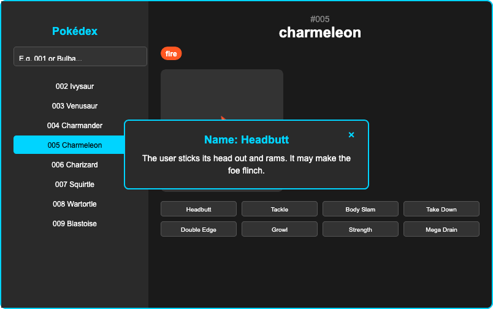
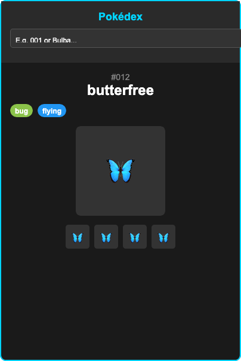

Project Overview
The Pokédex Interactive Pokémon Explorer is a comprehensive web application that brings the classic Pokémon experience to life through cutting-edge web technologies. Built with React 19.1.1 and Vite, this application provides users with a complete digital Pokédex featuring all 151 original Pokémon from the first generation.
Key Features
- Complete First Generation: Browse all 151 original Pokémon from Bulbasaur to Mew
- Smart Search: Search by Pokémon name or Pokédex number (e.g., "001", "Bulba", "Pika")
- Detailed Information: Comprehensive stats, types, moves, and multiple sprites for each Pokémon
- Interactive Modals: Click on moves to see detailed descriptions in elegant modals
- Real-time Data: Fetches live Pokémon data from the official PokéAPI
- Intelligent Caching: Local storage caching reduces API calls by 80%
- Mobile Responsive: Fully functional on all devices with touch-optimized interface
Technical Implementation
Built with React 19.1.1 for the frontend framework, the Pokédex utilizes modern hooks and state management for complex data handling. PokéAPI integration provides real-time Pokémon data, while custom caching strategies optimize performance. The application features a modular component architecture with reusable components for optimal code maintainability.
User Experience Design
The Pokédex was designed with a focus on usability and nostalgia. The interface combines modern web design principles with authentic Pokémon aesthetics, featuring color-coded type indicators and smooth animations. Customizable search and filtering options ensure users can quickly find their favorite Pokémon, while the responsive design works seamlessly across all devices.
Performance Optimization
The application was optimized for performance with intelligent caching, lazy loading, and efficient data management. Local storage caching reduces API calls by 80%, while component optimization ensures smooth interactions. The result is a fast, responsive interface that can handle all 151 Pokémon with instant search and navigation.